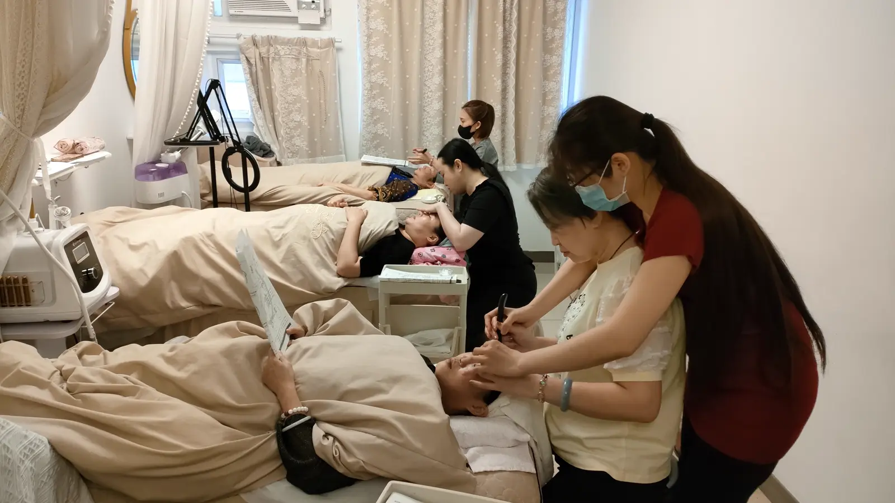

The Bojin Journal · The method
Should You Chill Your Bojin Stick? What Temperature Actually Does

A student messaged me a photo once: her bojin stick, laid out on a bed of ice cubes in a bowl, next to her sink. She'd seen a jade roller video promising a "cooling, de-puffing" effect and assumed the same rule applied to her stick. It doesn't, and I want to clear this up properly, because it's a genuinely reasonable thing to wonder, and the marketing around it is everywhere.
So here's the idea before the detail: the tool's temperature is not part of how bojin works. What matters is that your own skin warms up during a session, which I've written about separately. The metal in your hand can be room temperature the entire time and the method works exactly as intended. Chilling it adds a sensation, not a result.
Where the "chill it" idea comes from
Cold rollers and chilled gua sha stones are a real, popular category, and there's a reason: a cold surface against skin gives an immediate, pleasant tightening feeling and a satisfying moment on camera, which is exactly what a lot of skincare marketing is built around. That sensation is genuine. It's also brief, superficial, and about how the surface of your skin feels for a few seconds, which is a different job entirely from easing tension held underneath it.
Why bojin doesn't ask this of the tool
The method works through order, angle, and position, plus the right pressure, not through a temperature shock to the skin. A stainless steel bojin stick at room temperature already feels naturally cool and smooth against skin, the way any metal does, and that alone is enough. Chilling it further doesn't help the tool reach tension any better; it just adds a sensation on top that fades within the first minute of contact anyway, well before the real work of a session has even started.
Don't confuse the tool's temperature with your skin's temperature. Warming your skin, through a minute of gliding passes at the start of a session, genuinely changes how well the rest of the method works. Chilling the tool changes only how the first few seconds feel. One is technique. The other is sensation. It's worth putting your effort into the one that actually does something.
What actually happens to the tool during a session
Stainless steel does pick up a little warmth from your hand and your skin as you work, which is a natural side effect of contact, not something to manage or prevent. You don't need to re-chill it partway through, and you don't need to worry about it "getting too warm" either. The metal's temperature simply isn't a variable the method is built around, in either direction.
The one real exception: avoid extremes
None of this means temperature is completely irrelevant. A tool straight from a freezer, or one that's been sitting in hot water, brings an extreme your skin has to react to before it can do anything useful, and that's worth skipping simply because it surprises the skin rather than helping it. Room temperature, which is where a stainless steel tool sits naturally on a bathroom shelf, is exactly right. No freezer, no warming, no adjustment needed.
An honest note
This one is less a technique to practice and more a piece of marketing to let go of. A chilled tool won't make your sessions more effective, and a room-temperature one won't make them less so. What genuinely changes the outcome is everything I've written about elsewhere: the angle, the pressure, the order, warming your own skin first. Save the ice for your drink, not your stick.
Next time you reach for your stick, leave it right where it sits on the shelf. It's already exactly the temperature it needs to be.
Quick answers
Should I put my bojin stick in the fridge before using it?
There's no need to. The tool's temperature isn't part of how the method works. Stainless steel already feels cool against skin at room temperature, and any extra chill fades within the first minute anyway. Skip the fridge and put that effort into warming your own skin instead.
Why do beauty tools like jade rollers get marketed as chilled?
A cold surface gives a quick, pleasant tightening sensation and a satisfying moment on camera, which is why it shows up so often in skincare marketing. That sensation is real, but it's brief and about how skin feels for a few seconds, not about easing tension underneath, which is the job bojin is actually doing.
Does the tool warm up during a session, and does that matter?
Stainless steel does pick up a little warmth from your skin and your hand as you work, but this is a side effect, not something to manage. What matters is that your skin itself warms up through the early gliding passes of a session, not the temperature of the metal in your hand.
Is there any tool temperature that's actually wrong to use?
Straight from a freezer or straight from hot water are both worth avoiding, simply because an extreme surprises the skin rather than helping it. Room temperature, which is where a stainless steel tool naturally sits, is exactly right and needs no adjustment either way.
See what the warm-up actually looks like
If chilling the tool isn't the answer, warming your skin is. My free 3-minute video shows exactly how that opening minute of a session should look and feel.
Watch the free 3-min videoYu-Ting Lan is a Taiwan-based international bojin instructor and the founder of Héhé Studio. She has taught her bojin method to more than a thousand students, from complete beginners to grandmothers, across Taiwan, Hong Kong, and Malaysia.